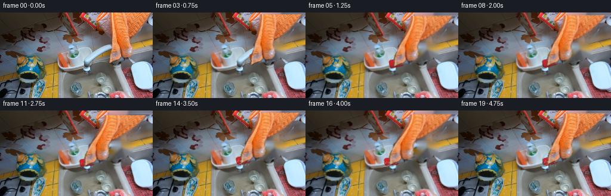
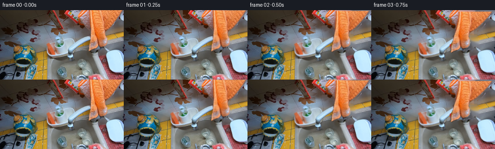

CODING AGENTS AS PIXEL WORLD MODELS
traex/GPT-6.1-Sol · common50_0027
点击播放 · 原生 RGB 像素
此结果可播放，但该运行尚未通过最终提交审核。页面展示不代表评测通过。
逐轮保存的候选
回放视频、检查图与代码变化。
每份候选均可单独播放。实际图片检查记录在下方工具轨迹中。
候选 01播放与检查图
点击播放 · 原生 RGB 像素


展开代码变化
--- 上一保存版本
+++ 本次保存版本
@@ -0,0 +1,159 @@
+from pathlib import Path
+import numpy as np
+from PIL import Image, ImageDraw, ImageFilter
+import cv2
+from artifact_io import save
+
+ROOT=Path(__file__).resolve().parent
+H,W=144,256
+source=np.asarray(Image.open(ROOT/'first_frame.png').convert('RGB')).copy()
+yy,xx=np.mgrid[:H,:W].astype(np.float32)
+rng=np.random.default_rng(19027)
+
+def smooth(t):
+ t=np.clip(t,0,1)
+ return t*t*(3-2*t)
+
+def poly(points, blur=.55):
+ m=Image.new('L',(W,H)); ImageDraw.Draw(m).polygon(points,fill=255)
+ if blur: m=m.filter(ImageFilter.GaussianBlur(blur))
+ return np.asarray(m,dtype=np.float32)/255
+
+# The exposed forearm and the individual fingers, traced by their RGB edges.
+outline=[(183,0),(253,0),(253,2),(247,11),(243,16),(240,21),
+ (236,26),(231,32),(228,35),(225,38),(221,41),(218,43),
+ (218,50),(220,54),(221,59),(223,64),(222,68),(221,71),
+ (218,74),(214,75),(213,77),(211,77),(212,79),(210,81),
+ (202,79),(198,81),(194,82),(189,83),(185,85),(181,83),
+ (183,78),(183,72),(184,66),(186,62),(186,55),(185,50),
+ (186,45),(185,40),(185,33),(184,28),(183,21),(183,11)]
+armmask=poly(outline,.48)
+solid=poly(outline,0)
+# Restore the sink only where the foreground will expose it. The fill uses
+# local metal pixels; it is not a replacement scene or a generated model.
+hole=cv2.dilate((solid*255).astype(np.uint8),np.ones((3,3),np.uint8),iterations=1)
+clean=cv2.inpaint(source,hole,5,cv2.INPAINT_TELEA).astype(np.float32)
+# Large top-of-frame holes are filled by a scanline continuation of the
+# actual sink-wall color and fine metal grain, rather than a flat patch.
+for y in range(H):
+ indices=np.where(hole[y]>0)[0]
+ if not len(indices): continue
+ l,r=int(indices.min()),int(indices.max())
+ if y<52:
+ # Right side of the arm is a continuous steel wall / sink ledge.
+ ref=min(W-1,r+5)
+ side=source[max(0,y-2):min(H,y+3),max(0,ref-1):min(W,ref+2)].mean((0,1))
+ for x in indices:
+ # Only the newly uncovered right-hand strip uses this continuation.
+ amount=smooth((x-(l+7))/max(1,r-l-12))
+ texture=source[y,max(0,min(W-1,ref-(r-x)%max(1,W-ref)))].astype(float)-side
+ clean[y,x]=clean[y,x]*(1-amount)+amount*(side+texture*.25)
+background=source.astype(np.float32)*(1-armmask[...,None])+clean*armmask[...,None]
+
+# A porous red sponge. Its grain and red tonal variations come from red
+# pixels in the given photograph, combined with fine mathematical pores.
+SW,SH=70,44
+sponge_img=Image.new('L',(SW,SH));d=ImageDraw.Draw(sponge_img)
+d.rounded_rectangle((2,3,67,40),radius=9,fill=255)
+sponge_alpha=np.asarray(sponge_img.filter(ImageFilter.GaussianBlur(.7)),np.float32)/255
+sy,sx=np.mgrid[:SH,:SW].astype(float)
+red_region=source[132:144,182:207]
+redtex=cv2.resize(red_region,(SW,SH),interpolation=cv2.INTER_CUBIC).astype(float)
+lum=cv2.cvtColor(redtex.astype(np.uint8),cv2.COLOR_RGB2GRAY).astype(float)
+lum=(lum-cv2.GaussianBlur(lum,(0,0),2.5))*0.33
+micro=rng.normal(0,3.6,(SH,SW))
+edge=np.minimum(np.minimum(sx,SW-1-sx),np.minimum(sy,SH-1-sy))
+shade=1+0.10*np.cos((sy-10)/13)-.22*(1-smooth(edge/6))-.15*smooth((sy-27)/12)
+sponge=np.stack([188*shade+lum+micro,34*shade+lum*.3+micro*.55,40*shade+lum*.35+micro*.6],-1)
+for _ in range(260):
+ px=rng.integers(4,SW-4);py=rng.integers(5,SH-5)
+ rad=rng.uniform(.28,.95)
+ pore=np.exp(-((sx-px)**2+(sy-py)**2)/(rad*rad))*rng.uniform(8,27)
+ sponge-=pore[...,None]*np.array([1,.5,.5])
+sponge=np.clip(sponge,0,255).astype(np.float32)
+
+
+def insert_sponge(canvas,center,angle,scale,compression=1):
+ # Soft rectangular volume, attached to the same hand coordinate system.
+ a=np.deg2rad(angle);c,s=np.cos(a),np.sin(a)
+ scx=scale;scy=scale*compression
+ matrix=np.array([[c*scx,-s*scy,center[0]-c*scx*SW/2+s*scy*SH/2],
+ [s*scx,c*scy,center[1]-s*scx*SW/2-c*scy*SH/2]],np.float32)
+ rgb=cv2.warpAffine(sponge,matrix,(W,H),flags=cv2.INTER_LINEAR)
+ alpha=cv2.warpAffine(sponge_alpha,matrix,(W,H),flags=cv2.INTER_LINEAR)
+ # A contact shadow on the glass follows the sponge and is very local.
+ sh=cv2.GaussianBlur(alpha,(0,0),1.1)*.13
+ canvas*=1-sh[...,None]
+ return canvas*(1-alpha[...,None])+rgb*alpha[...,None],alpha
+
+# Fixed bubble seeds accumulate in the small wet contact region rather than
+# changing randomly over the whole sink.
+bubbles=[(rng.uniform(-13,12),rng.uniform(-5,7),rng.uniform(.4,1.2),rng.uniform(.2,1)) for _ in range(31)]
+
+def wet_effect(canvas,frame,center,strength,spalpha):
+ if strength<=0:return canvas
+ # Fine suds hug the sponge's leading edge; retain underlying reflections.
+ overlay=Image.new('RGBA',(W*3,H*3),(0,0,0,0));d=ImageDraw.Draw(overlay)
+ for ox,oy,rad,delay in bubbles:
+ vis=smooth((strength-delay*.55)*2.5)
+ if vis<=0:continue
+ bx=center[0]+ox;by=center[1]+5+oy
+ alpha=int(90*vis)
+ bounds=((bx-rad)*3,(by-rad*.66)*3,(bx+rad)*3,(by+rad*.66)*3)
+ d.ellipse(bounds,outline=(224,239,239,alpha),width=1)
+ if rad>.7:d.ellipse((bx*3-1,by*3-1,bx*3,by*3),fill=(253,255,250,int(120*vis)))
+ ov=np.asarray(overlay.resize((W,H),Image.Resampling.LANCZOS),np.float32)
+ al=ov[:,:,3:4]/255
+ return canvas*(1-al)+ov[:,:,:3]*al
+
+frames=[source.copy()]
+for f in range(1,20):
+ t=f/4
+ approach=smooth(f/6)
+ scrub=smooth((f-5)/3)
+ phase=(f-6)*1.12
+ stroke=np.sin(phase)*scrub
+ pressure=.5+.5*np.cos(phase)
+ # The wrist makes a reach, then short transverse washing strokes.
+ dx=-38*approach+5.6*stroke
+ dy=6*approach+2.4*np.cos(phase)*scrub
+ bend=.20+.80*smooth(yy/68)
+ # Invert the foreground deformation; the shoulder stays off screen.
+ ym=yy-dy
+ bend0=.20+.80*smooth(ym/68)
+ xm=xx-dx*bend0
+ # small wrist flex, with no independent motion of the fingers
+ wrist=smooth((ym-42)/30)
+ xm+=1.15*np.sin(phase)*scrub*wrist*(ym-65)/25
+ arm=cv2.remap(source.astype(np.float32),xm.astype(np.float32),ym.astype(np.float32),cv2.INTER_LINEAR,borderMode=cv2.BORDER_REPLICATE)
+ am=cv2.remap(armmask,xm.astype(np.float32),ym.astype(np.float32),cv2.INTER_LINEAR,borderMode=cv2.BORDER_CONSTANT)
+ canvas=background.copy()
+ # The holding hand makes a small coupled counter-motion at the glass.
+ hold=np.exp(-((xx-111)/29)**2-((yy-87)/23)**2)
+ gx=xx-(1.6*approach-1.1*stroke)*hold
+ gy=yy-(-1.1*approach+0.6*stroke)*hold
+ canvas=cv2.remap(canvas,gx.astype(np.float32),gy.astype(np.float32),cv2.INTER_LINEAR,borderMode=cv2.BORDER_REFLECT_101)
+
+ reveal=smooth((f-1)/4)
+ center=(200-13*reveal+dx,64+15*reveal+dy)
+ compression=1-.09*scrub*pressure
+ canvas,sa=insert_sponge(canvas,center,-12-5*stroke,.365,compression)
+ # fingers cover the sponge upper and trailing sides, preserving the
+ # original skin texture and realistic hand silhouette.
+ canvas=canvas*(1-am[...,None])+arm*am[...,None]
+ foam=smooth((f-6)/10)
+ canvas=wet_effect(canvas,f,center,foam,sa)
+ # A small specular glint traveling across the wet glass on each pass.
+ shine=np.exp(-((xx-(130+1.5*stroke))/1.0)**2-((yy-87)/5.8)**2)*scrub*5
+ # Do not paint the glint over the hand.
+ canvas+=shine[...,None]*(1-am[...,None])
+ # Subpixel head sway is intentionally small for an egocentric close-up.
+ hx=.26*np.sin(f*.47)*approach
+ hy=.18*np.sin(f*.31)*approach
+ canvas=cv2.remap(canvas,(xx-hx).astype(np.float32),(yy-hy).astype(np.float32),cv2.INTER_LINEAR,borderMode=cv2.BORDER_REFLECT_101)
+ frames.append(np.clip(np.rint(canvas),0,255).astype(np.uint8))
+frames=np.stack(frames)
+assert np.array_equal(frames[0],source)
+save(frames,ROOT)
+# Candidate outputs are retained as RGB files for numeric inspection.
+np.save(ROOT/'.tmp'/'candidate_rgb.npy',frames)
可观测工具轨迹
实际执行的命令与返回图片。
命令 1exit 0
/bin/bash -lc 'ls -la && cat prompt.txt && cat GENERATION_RULES.md'
命令 2exit 0
/bin/bash -lc "cat task_spec.json; cat artifact_io.py; python - <<'PY'
from PIL import Image
import numpy as np
im=np.array(Image.open('first_frame.png'))
print(im.shape)
# 64x36 approximate category map with colors
small=np.array(Image.open('first_frame.png').resize((64,36)))
chars=''
for row in small:
s=''
for r,g,b in row.astype(int):
if r>g*1.3 and r>b*1.3 and r>100: c='R'
elif r>g*1.14 and g>b*1.14 and r>70: c='s'
elif max(r,g,b)-min(r,g,b)<25:
c=' .:-=+*#%@'[min(9,(int(r)+int(g)+int(b))//3//26)]
elif b>r*1.15: c='b'
elif g>r*1.2: c='g'
else:c='o'
s+=c
print(s)
PY"命令 3exit 0
/bin/bash -lc "python - <<'PY'
from PIL import Image
import numpy as np
im=np.array(Image.open('first_frame.png'))
for y in range(0,144,8):
print('y',y,':', ' '.join('%3d,%3d,%3d'%tuple(im[y:y+8,x:x+8].mean((0,1)).astype(int)) for x in range(0,256,8)))
PY"命令 4exit 0
/bin/bash -lc "python - <<'PY'
from PIL import Image
import numpy as np, colorsys
im=Image.open('first_frame.png').resize((128,72))
a=np.array(im)
for y,row in enumerate(a):
s=''
for r,g,b in row.astype(float):
h,ss,v=colorsys.rgb_to_hsv(r/255,g/255,b/255)
if v<.12: c=' '
elif ss<.12: c='.:+*#'[min(4,int(v*5))]
elif h>.92 or h<.025:c='r' if v<.6 else 'R'
elif h<.065:c='s' if v<.6 else 'S'
elif h<.105:c='o' if v<.6 else 'O'
elif h<.17:c='y' if v<.6 else 'Y'
elif h<.43:c='g'
elif h<.53:c='t'
elif h<.7:c='b' if v<.7 else 'B'
else:c='m'
s+=c
print('%3d '%(y*2)+s)
PY"命令 5exit 0
/bin/bash -lc "python - <<'PY'
import numpy as np
from PIL import Image
import scipy.ndimage as nd
im=np.array(Image.open('first_frame.png')).astype(float)
r,g,b=im.transpose(2,0,1)
for name,m in [('skin',(r>150)&(r>g*1.3)&(g>b*1.3)),('red',(r>90)&(r>g*1.5)&(r>b*1.45)&(g<b*1.4))]:
lab,n=nd.label(m)
print(name)
for i in np.argsort(nd.sum(m,lab,np.arange(n+1)))[::-1][:15]:
yy,xx=np.where(lab==i)
if len(xx):print(len(xx),'bounds',(xx.min(),yy.min(),xx.max(),yy.max()),'mean',im[yy,xx].mean(0))
# luminance 96x54
l=np.array(Image.open('first_frame.png').convert('L').resize((96,54)))
chars=' .,:;irsXA253hMHGS#9B&@'
for y,row in enumerate(l): print('%3d '%round(y*144/54)+''.join(chars[int(v)*len(chars)//256] for v in row))
PY"命令 6exit 0
/bin/bash -lc "python - <<'PY'
from PIL import Image
import numpy as np
im=np.array(Image.open('first_frame.png')).astype(float);r,g,b=im.transpose(2,0,1)
m=(r>140)&(r>g*1.3)&(g>b*1.3)
for y in range(0,100,2):
xs=np.where(m[y])[0]; segments=np.split(xs,np.where(np.diff(xs)>1)[0]+1)
print(y,[(int(s[0]),int(s[-1])) for s in segments if len(s)>1])
print('right bottom 180..255')
a=np.array(Image.open('first_frame.png'))
# color every 2 pixels with separate warm categories, showing hue and brightness.
for y in range(0,144,3):
print('%3d '%y,end='')
for x in range(90,256,2):
r,g,b=a[y:y+3,x:x+2].mean((0,1))
if r>140 and r>g*1.3 and g>b*1.3:c='S'
elif r>90 and r>g*1.3 and r>b*1.1:c='R'
elif b>r*1.12:c='B' if b>150 else 'b'
elif max(r,g,b)<65:c='.'
elif max(r,g,b)-min(r,g,b)<20:c='*' if r>170 else '+' if r>120 else ':'
elif g>b*1.25 and r>g*1.1:c='y'
else:c='o'
print(c,end='')
print()
PY"命令 7exit 0
/bin/bash -lc "python - <<'PY'
from PIL import Image
import numpy as np
im=np.array(Image.open('first_frame.png'))
# summarize 1 px rows of patch x90..185 y0..95 as hue brightness
for y in range(0,96):
s=''
for x in range(90,186):
r,g,b=im[y,x].astype(float)
if max(r,g,b)<45: c=' '
elif r>110 and r>g*1.5 and r>b*1.4:c='R'
elif r>100 and r>g*1.15 and g>b*1.12:c='s'
elif b>r*1.1:c='B' if b>170 else 'b'
elif r>g*1.2 and r>b*1.05:c='r'
elif g>r*1.15:c='g'
else:c=' .,:;irsXA253hMHGS#9B&@'[min(21,int((r+g+b)/3)*22//256)]
s+=c
print('%2d '%y+s)
PY"命令 8exit 0
/bin/bash -lc "python - <<'PY'
from PIL import Image
import numpy as np
im=np.array(Image.open('first_frame.png'))
print('bottom object y 86..143 x180..255')
for y in range(86,144,2):
print('%3d'%y,end=' ')
for x in range(180,256,2):
p=im[y:y+2,x:x+2].mean((0,1));r,g,b=p
if r>g*1.6 and r>b*1.5:c='R'
elif r>g*1.3 and r>b*1.15:c='s'
elif r>g*1.2 and b>g*1.05:c='p'
elif b>r*1.15:c='B' if b>170 else 'b'
else:c=' .:-=+*#%@'[min(9,int(p.mean())//26)]
print(c,end='')
print()
for y in [90,100,110,120,130,138]:
print('y',y,[(x,tuple(im[y,x])) for x in range(188,256,4)])
PY"命令 9exit 0
/bin/bash -lc "python - <<'PY'
from PIL import Image
import numpy as np
im=np.array(Image.open('first_frame.png'))
for y in range(44,88,2):
print(y, ' '.join('%02d:%3d/%3d/%3d'%(x,*im[y:y+2,x:x+2].mean((0,1)).astype(int)) for x in range(176,230,2)))
PY"命令 10exit 0
/bin/bash -lc "python - <<'PY' import cv2 print(cv2.__version__) PY"
命令 11exit 0
/bin/bash -lc "python - <<'PY'
from PIL import Image
import numpy as np
im=np.array(Image.open('first_frame.png'))
for y in range(58,144,2):
s=''
for x in range(60,132):
r,g,b=im[y:y+2,x].mean(0)
if r>160 and r>g*1.1 and g>b*1.6:c='Y'
elif r>140 and r>g*1.3 and g>b*1.3:c='S'
elif r>100 and r>g*1.2 and r>b*1.15:c='s'
elif b>r*1.12:c='B' if b>170 else 'b'
elif g>r*1.15:c='g'
else:c=' .,:;+*#@'[min(8,int((r+g+b)/3)//29)]
s+=c
print('%3d '%y+s)
PY"命令 12exit 1
/bin/bash -lc "cat > generate.py <<'PY'
from pathlib import Path
import numpy as np
from PIL import Image, ImageDraw, ImageFilter
import cv2
from artifact_io import save
ROOT=Path(__file__).resolve().parent
H,W=144,256
source=np.asarray(Image.open(ROOT/'first_frame.png').convert('RGB')).copy()
yy,xx=np.mgrid[:H,:W].astype(np.float32)
rng=np.random.default_rng(19027)
def smooth(t):
t=np.clip(t,0,1)
return t*t*(3-2*t)
def poly(points, blur=.55):
m=Image.new('L',(W,H)); ImageDraw.Draw(m).polygon(points,fill=255)
if blur: m=m.filter(ImageFilter.GaussianBlur(blur))
return np.asarray(m,dtype=np.float32)/255
# The exposed forearm and the individual fingers, traced by their RGB edges.
outline=[(183,0),(253,0),(253,2),(247,11),(243,16),(240,21),
(236,26),(231,32),(228,35),(225,38),(221,41),(218,43),
(218,50),(220,54),(221,59),(223,64),(222,68),(221,71),
(218,74),(214,75),(213,77),(211,77),(212,79),(210,81),
(202,79),(198,81),(194,82),(189,83),(185,85),(181,83),
(183,78),(183,72),(184,66),(186,62),(186,55),(185,50),
(186,45),(185,40),(185,33),(184,28),(183,21),(183,11)]
armmask=poly(outline,.48)
solid=poly(outline,0)
# Restore the sink only where the foreground will expose it. The fill uses
# local metal pixels; it is not a replacement scene or a generated model.
hole=cv2.dilate((solid*255).astype(np.uint8),np.ones((3,3),np.uint8),iterations=1)
clean=cv2.inpaint(source,hole,5,cv2.INPAINT_TELEA).astype(np.float32)
# Large top-of-frame holes are filled by a scanline continuation of the
# actual sink-wall color and fine metal grain, rather than a flat patch.
for y in range(H):
indices=np.where(hole[y]>0)[0]
if not len(indices): continue
l,r=int(indices.min()),int(indices.max())
if y<52:
# Right side of the arm is a continuous steel wall / sink ledge.
ref=min(W-1,r+5)
side=source[max(0,y-2):min(H,y+3),max(0,ref-1):min(W,ref+2)].mean((0,1))
for x in indices:
# Only the newly uncovered right-hand strip uses this continuation.
amount=smooth((x-(l+7))/max(1,r-l-12))
texture=source[y,max(0,min(W-1,ref-(r-x)%max(1,W-ref)))].astype(float)-side
clean[y,x]=clean[y,x]*(1-amount)+amount*(side+texture*.25)
background=source.astype(np.float32)*(1-armmask[...,None])+clean*armmask[...,None]
# A porous red sponge. Its grain and red tonal variations come from red
# pixels in the given photograph, combined with fine mathematical pores.
SW,SH=70,44
sponge_img=Image.new('L',(SW,SH));d=ImageDraw.Draw(sponge_img)
d.rounded_rectangle((2,3,67,40),radius=9,fill=255)
sponge_alpha=np.asarray(sponge_img.filter(ImageFilter.GaussianBlur(.7)),np.float32)/255
sy,sx=np.mgrid[:SH,:SW].astype(float)
red_region=source[132:144,182:207]
redtex=cv2.resize(red_region,(SW,SH),interpolation=cv2.INTER_CUBIC).astype(float)
lum=cv2.cvtColor(redtex.astype(np.uint8),cv2.COLOR_RGB2GRAY).astype(float)
lum=(lum-cv2.GaussianBlur(lum,(0,0),2.5))*0.33
micro=rng.normal(0,3.6,(SH,SW))
edge=np.minimum(np.minimum(sx,SW-1-sx),np.minimum(sy,SH-1-sy))
shade=1+0.10*np.cos((sy-10)/13)-.22*(1-smooth(edge/6))-.15*smooth((sy-27)/12)
sponge=np.stack([188*shade+lum+micro,34*shade+lum*.3+micro*.55,40*shade+lum*.35+micro*.6],-1)
for _ in range(260):
px=rng.integers(4,SW-4);py=rng.integers(5,SH-5)
rad=rng.uniform(.28,.95)
pore=np.exp(-((sx-px)**2+(sy-py)**2)/(rad*rad))*rng.uniform(8,27)
sponge-=pore[...,None]*np.array([1,.5,.5])
sponge=np.clip(sponge,0,255).astype(np.float32)
def insert_sponge(canvas,center,angle,scale,compression=1):
# Soft rectangular volume, attached to the same hand coordinate system.
a=np.deg2rad(angle);c,s=np.cos(a),np.sin(a)
scx=scale;scy=scale*compression
matrix=np.array([[c*scx,-s*scy,center[0]-c*scx*SW/2+s*scy*SH/2],
[s*scx,c*scy,center[1]-s*scx*SW/2-c*scy*SH/2]],np.float32)
rgb=cv2.warpAffine(sponge,matrix,(W,H),flags=cv2.INTER_LINEAR)
alpha=cv2.warpAffine(sponge_alpha,matrix,(W,H),flags=cv2.INTER_LINEAR)
# A contact shadow on the glass follows the sponge and is very local.
sh=cv2.GaussianBlur(alpha,(0,0),1.1)*.13
canvas*=1-sh[...,None]
return canvas*(1-alpha[...,None])+rgb*alpha[...,None],alpha
# Fixed bubble seeds accumulate in the small wet contact region rather than
# changing randomly over the whole sink.
bubbles=[(rng.uniform(-13,12),rng.uniform(-5,7),rng.uniform(.4,1.2),rng.uniform(.2,1)) for _ in range(31)]
def wet_effect(canvas,frame,center,strength,spalpha):
if strength<=0:return canvas
# Fine suds hug the sponge's leading edge; retain underlying reflections.
overlay=Image.new('RGBA',(W*3,H*3),(0,0,0,0));d=ImageDraw.Draw(overlay)
for ox,oy,rad,delay in bubbles:
vis=smooth((strength-delay*.55)*2.5)
if vis<=0:continue
bx=center[0]+ox;by=center[1]+5+oy
alpha=int(90*vis)
bounds=((bx-rad)*3,(by-rad*.66)*3,(bx+rad)*3,(by+rad*.66)*3)
d.ellipse(bounds,outline=(224,239,239,alpha),width=1)
if rad>.7:d.ellipse((bx*3-1,by*3-1,bx*3,by*3),fill=(253,255,250,int(120*vis)))
ov=np.asarray(overlay.resize((W,H),Image.Resampling.LANCZOS),np.float32)
al=ov[:,:,3:4]/255
return canvas*(1-al)+ov[:,:,:3]*al
frames=[source.copy()]
for f in range(1,20):
t=f/4
approach=smooth(f/6)
scrub=smooth((f-5)/3)
phase=(f-6)*1.12
stroke=np.sin(phase)*scrub
pressure=.5+.5*np.cos(phase)
# The wrist makes a reach, then short transverse washing strokes.
dx=-38*approach+5.6*stroke
dy=6*approach+2.4*np.cos(phase)*scrub
bend=.20+.80*smooth(yy/68)
# Invert the foreground deformation; the shoulder stays off screen.
ym=yy-dy
bend0=.20+.80*smooth(ym/68)
xm=xx-dx*bend0
# small wrist flex, with no independent motion of the fingers
wrist=smooth((ym-42)/30)
xm+=1.15*np.sin(phase)*scrub*wrist*(ym-65)/25
arm=cv2.remap(source.astype(np.float32),xm,ym,cv2.INTER_LINEAR,borderMode=cv2.BORDER_REPLICATE)
am=cv2.remap(armmask,xm,ym,cv2.INTER_LINEAR,borderMode=cv2.BORDER_CONSTANT)
canvas=background.copy()
# The holding hand makes a small coupled counter-motion at the glass.
hold=np.exp(-((xx-111)/29)**2-((yy-87)/23)**2)
gx=xx-(1.6*approach-1.1*stroke)*hold
gy=yy-(-1.1*approach+0.6*stroke)*hold
canvas=cv2.remap(canvas,gx,gy,cv2.INTER_LINEAR,borderMode=cv2.BORDER_REFLECT_101)
reveal=smooth((f-1)/4)
center=(200-13*reveal+dx,64+15*reveal+dy)
compression=1-.09*scrub*pressure
canvas,sa=insert_sponge(canvas,center,-12-5*stroke,.365,compression)
# fingers cover the sponge upper and trailing sides, preserving the
# original skin texture and realistic hand silhouette.
canvas=canvas*(1-am[...,None])+arm*am[...,None]
foam=smooth((f-6)/10)
canvas=wet_effect(canvas,f,center,foam,sa)
# A small specular glint traveling across the wet glass on each pass.
shine=np.exp(-((xx-(130+1.5*stroke))/1.0)**2-((yy-87)/5.8)**2)*scrub*5
# Do not paint the glint over the hand.
canvas+=shine[...,None]*(1-am[...,None])
# Subpixel head sway is intentionally small for an egocentric close-up.
hx=.26*np.sin(f*.47)*approach
hy=.18*np.sin(f*.31)*approach
canvas=cv2.remap(canvas,xx-hx,yy-hy,cv2.INTER_LINEAR,borderMode=cv2.BORDER_REFLECT_101)
frames.append(np.clip(np.rint(canvas),0,255).astype(np.uint8))
frames=np.stack(frames)
assert np.array_equal(frames[0],source)
save(frames,ROOT)
# Candidate outputs are retained as RGB files for numeric inspection.
np.save(ROOT/'.tmp'/'candidate_rgb.npy',frames)
PY
python generate.py"命令 13exit 0
/bin/bash -lc "python - <<'PY'
p='generate.py'
s=open(p).read().replace('cv2.remap(source.astype(np.float32),xm,ym,','cv2.remap(source.astype(np.float32),xm.astype(np.float32),ym.astype(np.float32),').replace('cv2.remap(armmask,xm,ym,','cv2.remap(armmask,xm.astype(np.float32),ym.astype(np.float32),').replace('cv2.remap(canvas,gx,gy,','cv2.remap(canvas,gx.astype(np.float32),gy.astype(np.float32),').replace('cv2.remap(canvas,xx-hx,yy-hy,','cv2.remap(canvas,(xx-hx).astype(np.float32),(yy-hy).astype(np.float32),')
open(p,'w').write(s)
PY
python generate.py
python - <<'PY'
import numpy as np
from PIL import Image
im=np.load('.tmp/candidate_rgb.npy');print(im.shape,im.dtype)
print('frame0 exact',np.array_equal(im[0],np.array(Image.open('first_frame.png'))))
print('mean consecutive pixel delta',np.abs(np.diff(im.astype(float),axis=0)).mean((1,2,3)).round(2))
for f in [0,3,6,12,19]:
print('FRAME',f)
a=im[f]
for y in range(50,96,2):
s=''
for x in range(95,226,2):
r,g,b=a[y:y+2,x:x+2].mean((0,1))
if r>120 and r>g*2 and r>b*1.6:c='R'
elif r>140 and r>g*1.3 and g>b*1.3:c='S'
elif r>g*1.2 and r>b*1.15:c='s'
elif b>r*1.12:c='B' if b>170 else 'b'
else:c=' .,:;+*#@'[min(8,int((r+g+b)/3)//29)]
s+=c
print(y,s)
PY"命令 14exit 0
/bin/bash -lc "ls -lh pixels.npz index.html generate.py .tmp/candidate_rgb.npy && python - <<'PY'
import numpy as np
from PIL import Image
p=np.load('pixels.npz')['pixels']
a=np.load('.tmp/candidate_rgb.npy')
rgb=np.stack([(p>>16)&255,(p>>8)&255,p&255],-1).transpose(2,0,1,3).astype(np.uint8)
assert np.array_equal(a,rgb)
assert len(list(__import__('pathlib').Path('frames').glob('*.png')))==20
print('Artifact validation passed: 20 RGB frames, 256x144; exact first-frame match.')
PY"保存候选 1 份；完成命令 14 次；可验证图片返回 0 张。原始 API 响应与完整日志保留在本地。